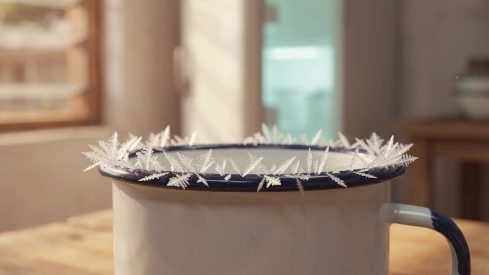

CHAPTER 06
THE ANSWER
?
Water: still debated
Erasto B. Mpemba
1950 – 2023
Where the name turns up now
Named for a schoolboy’s question in Tanzania
Classical and quantum systems studied under the Mpemba name · examples
“…that you were
confused.”
— his teacher, as Mpemba recalled it

A visual metaphor · not a measurement
Hot
Cold
The shortcut
Illustration
Guy Wonders Why
THE BOY WHO
FROZE
HOT
WATER
Hot water freezing first: still debated.
Hot systems cooling faster: demonstrated.
Sources in the description
SCRATCH VO